StatementAbout the work
Bodily
To give birth, to rear and to educate without any denial and expectation, Is a Big responsibility,
Forget yourself,
But today is changing,
I am changing gradually and gracefully, I decided to decide, I am a person, I did know nothing, but I learned to be free, and sing loudly.
Mother is not just for giving birth,
I am not just for giving birth, I defend life while hurricane and flurry. How they ignore, When I am fully cracked,
There is no artist, gifted or famous women throughout history, I have heard this from different classes of society, literate, educated and illiterate people.
This caused me to make it subject of my work. How is it possible?
One of the results of feminist criticism and art is "male gaze" term. Male gaze idea is somehow related to psychoanalysis theory.
One Who gazes is active and one who is gazed is passive.
To be seen is pleasant, but you should want to be seen,
What you desire is pleasant, when you achieve it, but it is annoying when you do not desire and you are made to involve,
Lady, never give up yourself.
Be your own umbrella,
Be your own cloud,
Be your own rain,
Do not hesitate, God was genius when created you,
Forget about God servants who ignored your womanly world.
Works20 artworks


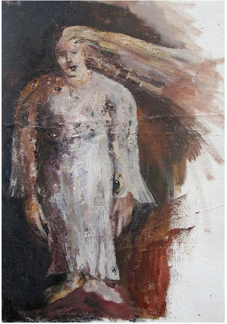

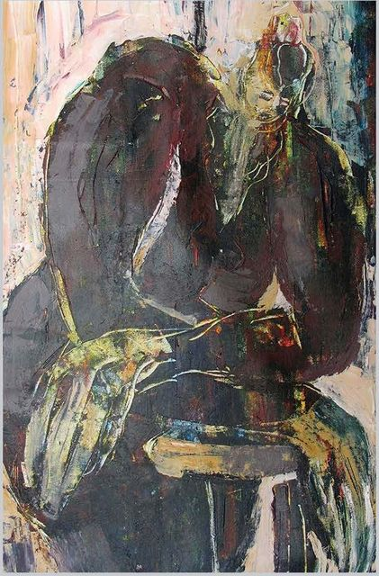

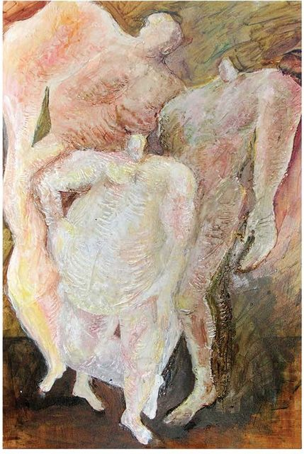

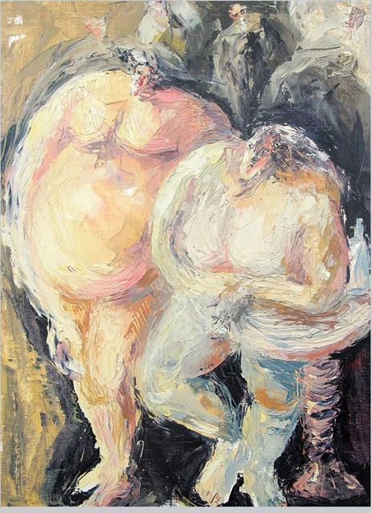

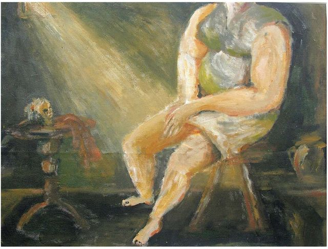


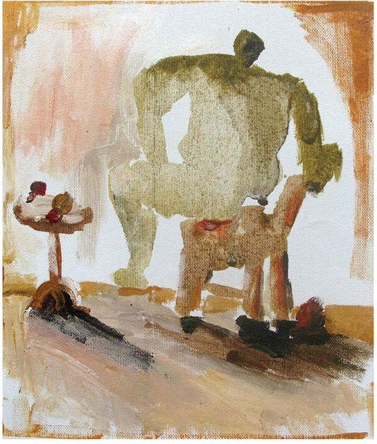

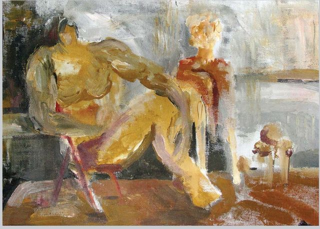

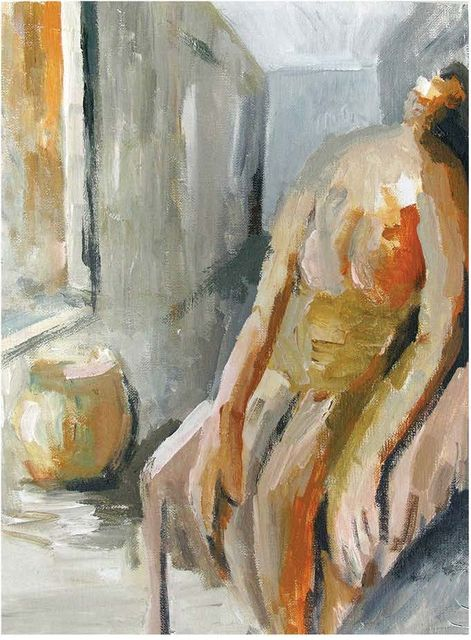

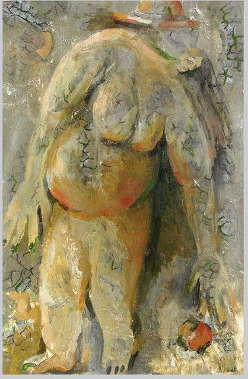

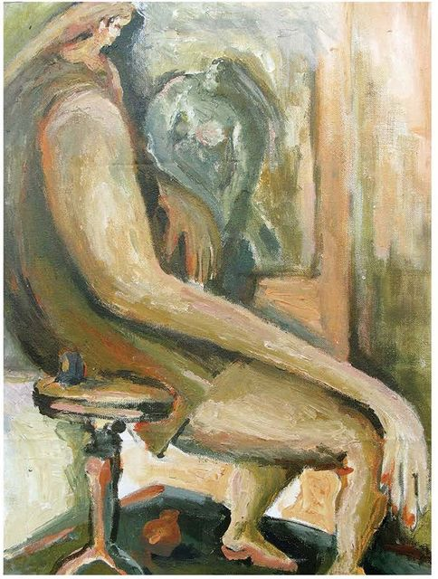


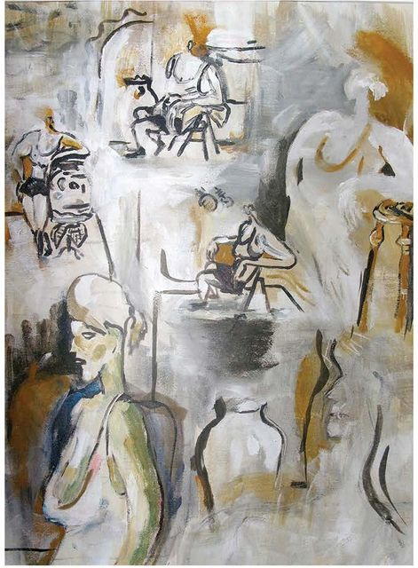


History of experienceBiography · education · exhibitions · awards
Education
- Master degree in Painting
- University of Arts & Architecture in Tehran
Solo exhibitions
- 2015Sobhan Gallery|Tehran – Iran
Group exhibitions
- 2014Participated in the First Festival of Visual Art in Russia|Moscow
- 2014Participated in the First Festival of Visual Art in center of Contemporary Art Oblaka
- 2013Participated in the exhibition painting in Zhinoos gallery|Tehran – Iran
- 2012Participated in the exhibition of illustration in Saba gallery|Tehran – Iran
- The selected illustration in 6th young Art Festival
- The First prize of Collage in the First Festival of visual art in Russia
Source: the Sobhan Gallery artist catalogue “Bahareh Chartabi.pdf”.